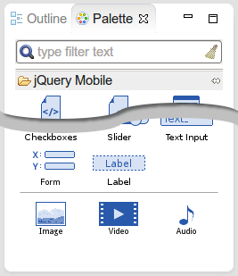
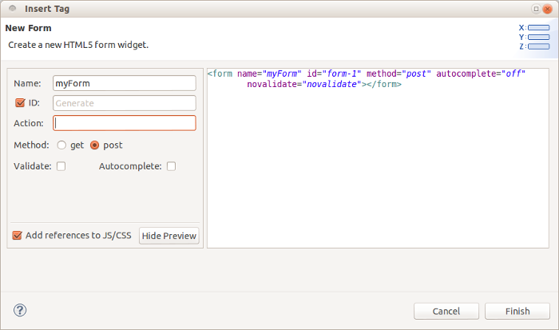
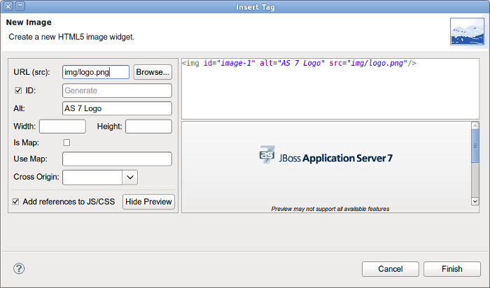
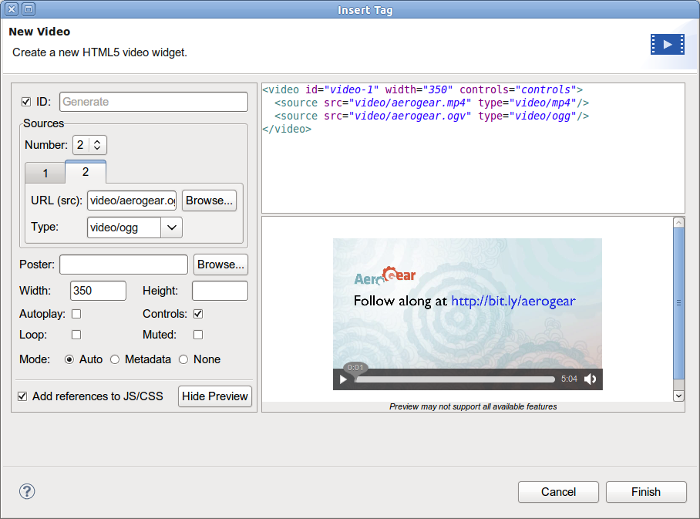
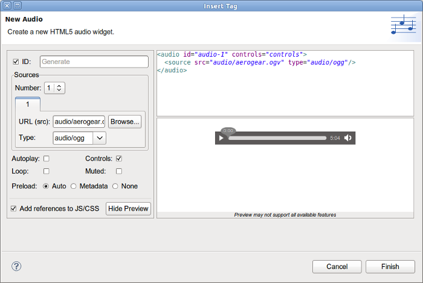
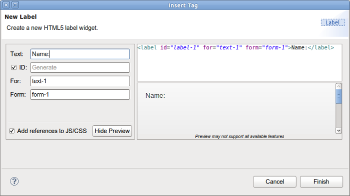
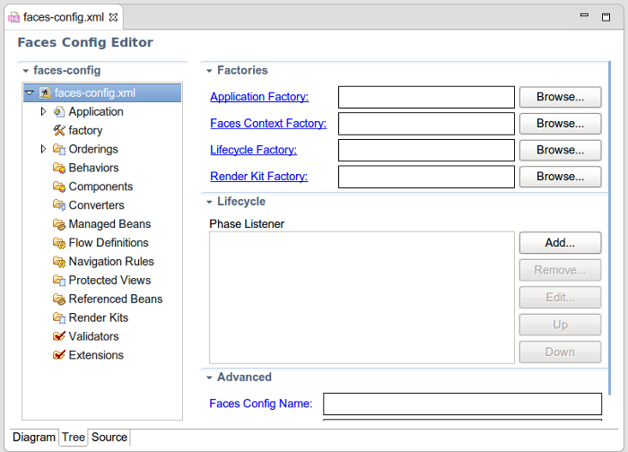

jQuery Mobile |
|
|
jQuery Mobile Palette |
A few new HTML5 widget wizards are now available in jQuery Mobile Palette for HTML5 files:  1. Form:  2. Image:  3. Video:  4. Audio:  5. Label:  |
JSF 2.2 |
|
|
JSF 2.2 face-config.xml editor |
JBoss Tools XML editor now supports Faces Config 2.2:  |